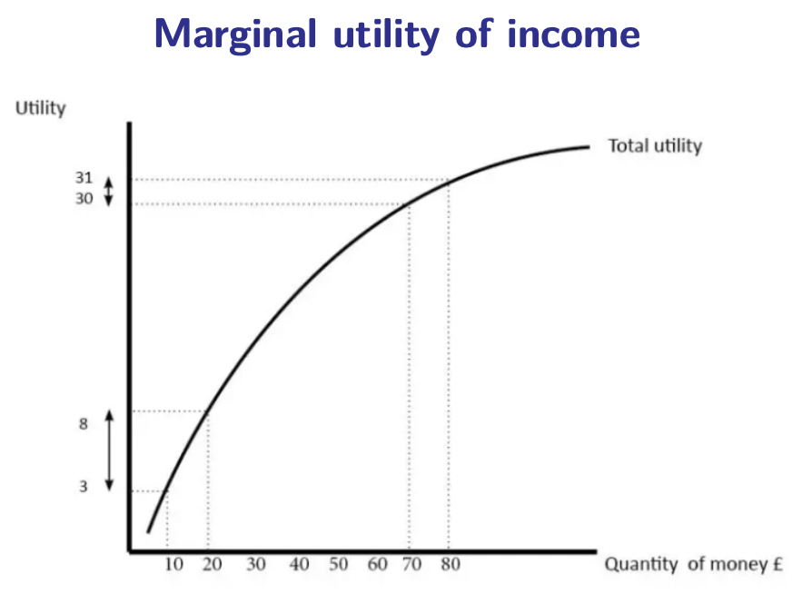

9.3 — Equity & Progressivity
Chapter 9: Taxation & Tax Incidence — Who Should Pay?
The Extreme: The Poll Tax
Let's start with the most extreme and most "efficient" tax imaginable: the poll tax.
A poll tax (also called a head tax or lump-sum tax) charges every citizen the exact same amount in money terms, regardless of their income, wealth, or circumstances. A billionaire and a homeless person both pay the same €1,000.
From a pure efficiency perspective, the poll tax is perfect: it causes zero deadweight loss because it does not depend on any economic behavior. Whether you work 80 hours or zero hours, you pay the same amount. So the tax cannot distort your choices about working, saving, or consuming.
But from an equity perspective, it is a catastrophe. The most famous attempt to implement a poll tax was by Margaret Thatcher in the UK in 1990. She replaced property taxes (based on house value) with a "Community Charge" — a flat tax on every adult. Here is what happened:
💥 The Result
Massive riots across the UK. Hundreds of thousands of people protested because the tax was brutally unfair — a duke living in a castle paid the same as a cleaner living in a tiny flat. The tax was quickly abolished, and Thatcher resigned shortly after. This event proved that efficiency without equity is politically impossible.
📋 Still Exists in Small Forms
Some small "poll taxes" still exist today: flat garbage collection fees, TV license fees (where every household pays the same), and mandatory health insurance premiums that are the same for everyone. In the US, some argue that certain healthcare costs function as a de facto poll tax (Saez & Zucman, 2019).
Vertical Equity: The Rich Should Pay More
Vertical equity states that groups with more resources should pay higher taxes than groups with fewer resources. In other words, the tax system should be progressive — the rich should carry a proportionally heavier burden.
There are three possible structures for tax rates:
Progressive Tax Rates
The ATR rises with income. Higher earners pay a larger percentage of their total income. This is the most common system for personal income taxes in the world.
Example: 15% on the first €30k, 25% on €30k-60k, 35% above €60k.
Proportional (Flat) Rates
The ATR stays the same across all income groups. Everyone pays the same percentage, regardless of income.
Example: Everyone pays 15% of income. A person earning €20k pays €3k; a person earning €200k pays €30k.
Regressive Rates
The ATR decreases as income rises. Lower earners pay a higher percentage. This typically happens indirectly through consumption taxes (VAT).
Example: A 20% VAT takes a larger share of a poor person's income since they spend nearly 100% of income on consumption.
- Until 2008: Progressive personal income tax rate with multiple brackets (classic European style).
- 2008–2021: A flat/proportional PIT rate of 15%. But it was adjusted at both extremes: a tax credit at the bottom (CZK 24,840/year, effectively zeroing out taxes for the poorest) and a solidary surcharge at the top (extra 7% on gross earnings exceeding 4× the average salary ≈ CZK 139k/month). So even the "flat" tax was de facto progressive.
- 2021+: Two rates: 15% on the first CZK 141k/month, then 23% above that. Tax credit extended each year. This is now an officially progressive schedule again.
The Deep Why: Diminishing Marginal Utility of Income
Why should the rich pay more? The most powerful economic justification comes from the concept of diminishing marginal utility of income:

The curve shows that total utility rises with income, but at a decreasing rate. The first euros you earn have enormous value — they buy food, shelter, medicine, safety. But as income increases, each additional euro buys increasingly trivial things — a third vacation, a second car, a fancier watch. The marginal utility (the slope of the curve) falls continuously.
The Implication: If €1 is worth far more to a poor person than to a rich person, then transferring €1 from the rich to the poor increases total societal welfare. The rich person barely notices the loss; the poor person's life improves significantly. This is the core economic argument for progressive taxation and redistribution.
The political debate about how progressive taxes should be ultimately reduces to a question about the shape of the utility function:
If utility is very concave...
Marginal utility drops very fast. The case for aggressive redistribution is strong. Taking €1,000 from a millionaire and giving it to a minimum-wage worker creates a massive net welfare gain. → High progressive taxes are justified.
If utility is nearly linear...
Marginal utility barely decreases. An extra €1 is almost as valuable to a rich person as to a poor person. The case for redistribution is weak. → Low, flat taxes are justified.
Horizontal Equity: Treat Equals Equally
Horizontal equity states that similar individuals should be treated similarly by the tax system. Two people in the same economic situation should pay the same amount of tax.
This sounds simple, but the problem is: how do you define "similar"? Consider this dilemma:
Who should pay more tax: a single mother raising 4 children on a €30,000 salary, or a disabled man living alone on the same €30,000 salary? They have the same gross income, but their ability to pay is very different. The mother has enormous childcare expenses. The disabled man has high medical costs. How do you compare their situations fairly?
Horizontal equity is a constant source of political debates and is the main reason why tax codes are so complex. Every exemption, deduction, and special provision in the tax law exists because legislators tried to achieve horizontal equity by distinguishing between people with different circumstances:
- Tax deductions for dependent children (parents face higher costs than non-parents).
- Special rates for married couples vs. single individuals.
- Deductions for mortgage interest (homeowners vs. renters).
- Exemptions for disabled persons, students, or caregivers.
Each of these exceptions tries to improve fairness, but they also increase complexity, create administrative costs, and open doors for tax avoidance (rich people hiring lawyers to exploit loopholes). This is yet another trade-off: more fairness = more complexity = more opportunities for abuse.
Chapter 9.3 — The Big Picture:
- Poll tax = same amount for everyone. Zero DWL, but brutally unfair. Thatcher's 1990 disaster proved efficiency without equity is impossible.
- Vertical equity: The rich should pay more → progressive, proportional, or regressive rates.
- Czech PIT: progressive until 2008, "flat" 15% from 2008-2021 (but de facto progressive with tax credit + solidary surcharge), two-rate schedule since 2021.
- A progressive PIT does not guarantee a progressive overall tax system. Payroll taxes and VAT can make the total burden regressive.
- Diminishing marginal utility of income = the core justification for progressive taxation. The left-vs-right debate is really about the curvature of the utility function.
- Horizontal equity: Similar people should pay similar taxes. Hard to define "similar" → leads to complex exemptions, deductions, and loopholes.